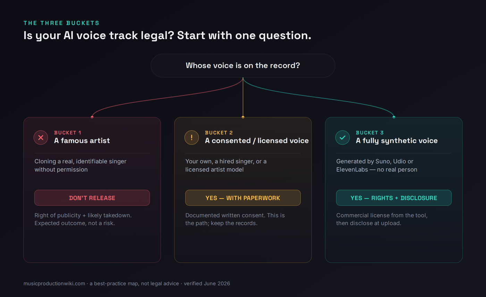
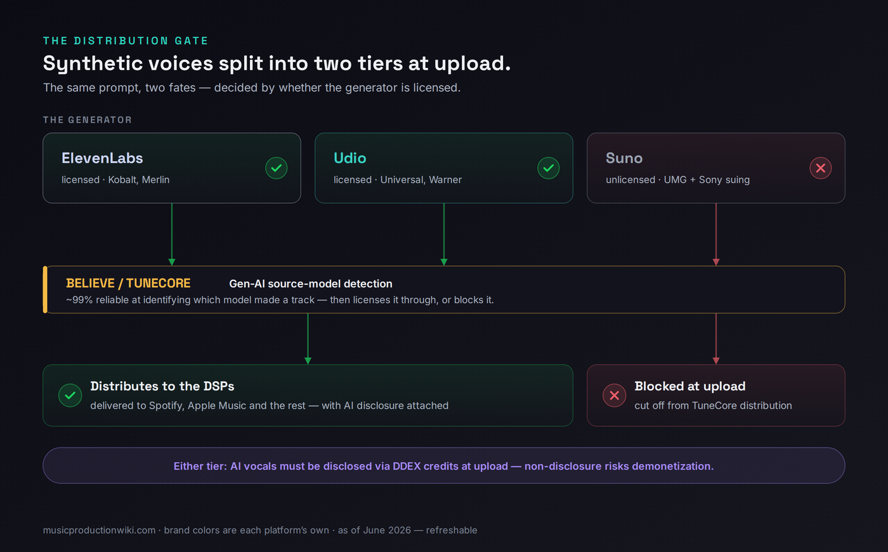
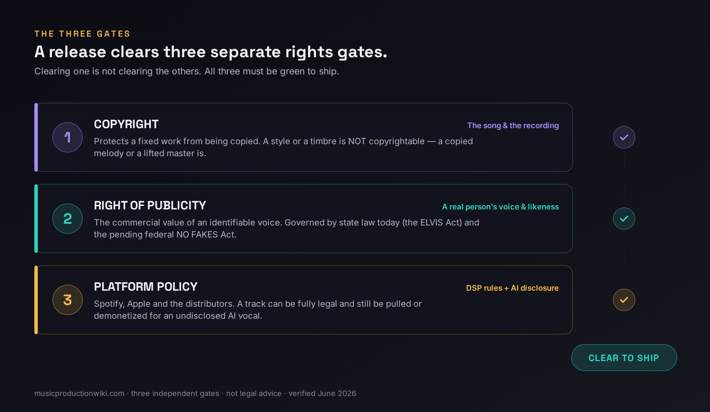

You opened a generator, typed a prompt, and out came a vocal. Maybe it sounds uncannily like an artist you love. Maybe it is your own voice, modeled and re-pitched. Maybe it belongs to nobody who has ever lived. Before that track goes anywhere near a streaming service, one question decides everything that follows — and most pages that answer “is AI voice cloning legal?” get it wrong by answering only a third of it. The truth is that “voice cloning” is three different legal questions wearing one coat. Cloning a famous artist's voice is one question, with a hard answer. Cloning a consented or licensed voice — your own, a session singer's, a properly licensed artist model — is a second question, with a different answer. Using a fully synthetic voice that no real person owns is a third. Each lives under a different part of the law, and the page that separates them is the only one that can actually tell you what to do with your track.
This article links to tools and platforms, some of which are affiliate links. If you sign up through one we may earn a commission at no cost to you. It changes nothing about the guidance — the policies and law below are reported as they are, click or not.
Whose voice is on the record? A famous artist's → don't release it; a takedown is the expected outcome, not a risk. A consented or licensed voice → legal, as long as you have the permission in writing. A fully synthetic voice from a generator → legal to release if you hold commercial rights from the tool and you disclose the AI use. The act of cloning is never the question. Whose voice, and whether you have permission, is.
One honesty note before the depth. This is a best-practice playbook, not legal advice, and the legal ground here is moving by the week. We state the bright lines as bright lines — a real person's voice is protected, a style is not — and we flag the genuinely unsettled parts as unsettled. For anything involving a real person's voice, have a music attorney review it before you release. With that said, here is the verified map.
The Three Buckets: Whose Voice Is on the Record?
Almost every confused argument about AI voices collapses the moment you ask one question: whose voice is this? Not “was AI involved” — that tells you nothing about legality on its own. The operative fact is whether the voice on the recording belongs to an identifiable real person, and if so, whether that person said yes. That single fork sorts every AI vocal track ever made into three buckets, and the bucket determines the rule.

The first bucket is the famous-artist clone — an AI imitation of an identifiable, recognizable singer. This is the bucket that makes headlines and the one with the clearest answer: don't release it commercially. The second is the consented or licensed voice — your own voice, a singer you hired and paid, or a licensed artist model where the artist agreed to AI use for a cut. This is the bucket the entire legitimate industry is being built around, and it is legal precisely because someone with the right to say yes did. The third is the fully synthetic voice — a vocal generated by Suno, Udio, ElevenLabs or a similar tool, modeled on no single real person. Here the right-of-publicity problem largely vanishes, and the questions that remain are about commercial rights from the tool and disclosure to the platforms.
What trips producers up is assuming the buckets blur into each other. They don't. A track in bucket three with airtight commercial rights is still a problem if the “synthetic” voice was actually trained to imitate a specific living artist — that quietly drags it back into bucket one. A track in bucket two with a real singer's enthusiastic verbal yes is still exposed if nothing was put in writing. Knowing your bucket is not a formality; it is the whole decision. If your broader question is whether an AI-generated release is legal at all — training-data lawsuits, copyright registrability, the licensing shift — that is the macro question, and our hub on whether AI music is legal is the place for it. This page is the narrow vertical: the voice specifically.
Bucket 1: Cloning a Famous Artist (Don't Release It)
In 2023 a track called “Heart on My Sleeve” used AI to imitate Drake and The Weeknd, racked up millions of plays, and was pulled across every major platform within days. It became the case study for a simple reason: it showed that the technology had outrun the obvious legal tool. The song didn't copy any Drake recording, so it wasn't a clean copyright case — it copied his voice, and copyright has never protected a voice. That gap is exactly the “soundalike” loophole the newer laws are built to close.
The doctrine that actually bites here is the right of publicity: the right of an identifiable person to control the commercial use of their name, image, likeness — and, increasingly, their voice. It is what lets an artist object when their vocal identity is reproduced and monetized without permission. Tennessee codified this for voice specifically with the ELVIS Act (the Ensuring Likeness Voice and Image Security Act), effective July 1, 2024, the first U.S. state law to extend the right of publicity expressly to AI voice simulation. California and New York have related statutes; many states have nothing yet. That patchwork is the entire reason there is a federal push, which we get to below.
The platforms are not waiting for the law to settle. Spotify bans unauthorized AI voice clones and impersonation outright and removes them on detection. Sony Music alone has reported having more than 135,000 AI deepfake tracks taken down, with imitations targeting artists from Beyoncé to Queen to Harry Styles. So even setting the courtroom aside, the operational reality is blunt: a commercial release that clones a famous voice is built to be removed. A takedown is not a tail risk you are gambling against; it is the expected, designed outcome. There is no commercial-rights purchase, no disclosure checkbox, and no distributor that converts a famous-voice clone into a releasable track. The honest verdict for bucket one is the short one: don't.
Bucket 2: A Consented or Licensed Voice (Yes, With Paperwork)
Now flip the fact that doomed bucket one. If the real person whose voice is on the record agreed to it, the right-of-publicity problem isn't violated — it's exercised. This is the legitimate path, and it is where the smart money in the industry is heading: from lawsuits to licenses. The catch is that “they said it was fine” is not consent in any form that protects you. Documented consent means a written agreement that names AI use specifically, defines its scope, sets a term, and states the revenue split. A verbal yes from a session singer who later sees your track doing numbers is the setup for a dispute, not a defense against one.
The cleanest version of this bucket is cloning your own voice. You own your own likeness, so there is no third party whose publicity right you could be infringing. The only cautions are practical: read the terms of whatever modeling tool you used, because some voice-model platforms claim broad rights over what you generate, and keep the model and its output documented like any other asset. Next cleanest is a voice you license from someone else under an explicit AI agreement. The template the industry now points to is the Grimes / Elf.Tech model, where the artist openly licensed her voice for AI tracks in exchange for a revenue share, and platforms such as Kits AI that host ethically licensed artist models with built-in revenue splits. Those structures exist precisely so the consent is documented by design.
One distinction worth holding onto: clearing the voice is not the same as clearing the song. If your consented vocalist is singing a melody or lyric that belongs to someone else, you still have an ordinary composition-licensing question on top of the voice question — the same one any cover or interpolation raises. Our guide to how music licensing works covers that layer, and if you intend to license your own finished work out, licensing your music walks the other direction. The verdict for bucket two is encouraging but conditional: yes, this is the path — and the paperwork is the path, not an afterthought to it.
Bucket 3: A Fully Synthetic Voice (Yes, With Rights and Disclosure)
The third bucket is the one most producers are actually in. You used Suno, Udio or ElevenLabs, and the voice that came out was modeled on no single identifiable person. Here the right-of-publicity gate is mostly clear — there is no real person whose voice you reproduced — and two different questions take over: do you hold the commercial rights to that output, and will the distribution pipeline accept it?
Commercial rights come from the tool's Terms of Service, not from copyright. This is the single most expensive misunderstanding in AI music. On most generators, the right to monetize attaches only to output you made on a paid tier, and it is rarely granted retroactively to a song you made for free and later decided to release. Suno's free tier is non-commercial only; its paid tiers grant commercial-use rights and the company takes no cut of your revenue — though, notably, after its label settlements Suno's terms shifted so paid users hold a perpetual commercial license rather than ownership. Udio's paid tier similarly grants commercial rights and runs on licensed training data. The critical thing to absorb: a commercial-rights grant from a tool is a contract permission to release, and it is not a copyright. Fully AI-generated audio generally is not registrable for copyright in the United States, because copyright requires human authorship. If you want the underlying detail on that, whether you can copyright AI music and how to copyright your music lay it out.

The second question — will the pipeline accept it — now has a sharper answer than it did a year ago, because the distributors built a two-tier system. In April 2026, Believe and its subsidiary TuneCore began automatically blocking distribution of tracks they detect as coming from unlicensed generators — what they call “pirate studios” — using source-model detection they describe as roughly 99 percent reliable at identifying which tool produced a vocal. Output from licensed tools that signed distribution deals (ElevenLabs and Udio, which hold major-label, Merlin and Kobalt agreements) passes through. Output from a tool still in active litigation with no such deal (Suno, which remains in court with Universal and Sony) is ineligible for TuneCore distribution. So the practical fork inside bucket three is no longer just “did I pay” — it is “did I generate on a tool my distributor will accept.” DistroKid, by contrast, accepts AI music with disclosure and does not apply that per-platform block. If you are choosing a generator with release in mind, our Suno review, Udio review and ElevenLabs review each cover where the tool sits in this landscape.
The third requirement is disclosure, and it is no longer optional in spirit. The verdict for bucket three: yes, you can release it — if the commercial right is real, the generator is one your pipeline accepts, and you disclose. Treat all three as a single gate, not a menu.
The Three Rights Gates Every Release Must Clear
Step back from the buckets and you can see why the “is it legal” question is so slippery: a release isn't cleared by one approval. It has to pass three separate gates, and clearing one tells you nothing about the others. Cheap pages skip this because it is the conceptual part, but it is exactly the part that keeps producers out of trouble.

The first gate is copyright. Copyright protects a fixed creative work — a specific song, a specific recording — from being reproduced. It does not protect a voice, a timbre, or a style. This is why a convincing soundalike historically slipped through: imitating how someone sounds isn't copying a work they made. Copyright bites only if you actually reproduce a protected composition or master. The second gate is the right of publicity, which protects the commercial value of an identifiable person's voice and likeness. This is the gate a famous artist invokes, the gate the ELVIS Act sharpened, and the gate the NO FAKES Act would federalize. You can be perfectly clear on copyright and still slam into this one — that is precisely what a famous-voice clone does.
The third gate is platform policy, and it is the one that bites first in practice. Your track can be flawless on copyright and publicity and still get pulled or demonetized for a policy reason — an undisclosed AI vocal, a generator your distributor blocks, or a pattern that looks like stream fraud. Spotify adopted DDEX AI-disclosure in song credits in its September 2025 policy update and does not down-rank AI-assisted music, but it removes unauthorized clones aggressively. Apple Music's Transparency Tags, introduced in March 2026, are self-reported now and slated to become required. Deezer runs proprietary detection and keeps flagged uploads out of its algorithmic and editorial playlists. The lesson of the three gates is that they are an AND, not an OR: a track ships only when copyright, publicity, and platform policy are all green at once. If you want to pressure-test where a planned release sits, the AI Music Rights Navigator walks the gates interactively, and the AI Copyright Strength tool estimates how much of your track is human-authored enough to protect.
Where the Law Stands: ELVIS, NO FAKES, and the Patchwork
Because this is a moving target, it is worth stating exactly where things sit and what is settled versus pending. Settled and operative today is the right of publicity as a matter of state law. Tennessee's ELVIS Act is in force and specifically covers AI voice simulation; a handful of other states have adjacent protections; most have none specific to voice. That unevenness — strong protection in some states, a gap in others — is the practical legal reality a release lives in right now.
Pending, not yet law, is the federal answer: the NO FAKES Act (S.4591, the Nurture Originals, Foster Art, and Keep Entertainment Safe Act of 2026). Introduced by Senator Chris Coons in May 2026, it would create the first federal right against unauthorized AI digital replicas of a person's voice and likeness — a right that would be licensable and transferable, descendible for up to seventy years after death, with carve-outs protecting news, parody and educational uses, and meaningful platform liability for hosting unauthorized replicas. On June 18, 2026 it was advanced unanimously by voice vote out of the Senate Judiciary Committee and reported to the full Senate. That is a real milestone, and it is also not the same as becoming law: it has cleared committee, not passed either chamber. Its backers span the major labels and the largest technology companies, which is why many observers expect it to move — but until it passes and is signed, the patchwork of state law is what governs. The honest framing for a producer is: plan as if a strong federal voice-right is coming, because the direction of travel is unmistakable, but don't treat a pending bill as if it were already enforceable.
It is also worth being precise about the industry backdrop, because it is often oversimplified into “everyone settled.” They did not. Warner Music settled with both Suno and Udio in late 2025; Universal settled with Udio. But Sony has settled with neither, and Universal and Sony both remain in active litigation with Suno, with the fair-use questions heading toward pivotal rulings. The trajectory genuinely is “from lawsuits to licenses,” but it is a split in progress, not a closed chapter — which is one more reason the tool you generate on matters to whether your track can ship. For the wider commercial picture of building on this, making money with AI music and how music publishing works set the context, and fair use in music explains the doctrine the courtroom fights actually turn on.
The Release Checklist
Here is the whole thing as a process. A producer does not need a law degree to release an AI-vocal track cleanly — they need to identify the bucket, secure permission where a real person is involved, confirm the commercial rights, classify the track honestly, and disclose at upload. Run these six steps in order before anything goes live.
- Identify your bucket. Ask whose voice is on the record — famous artist (stop here, don't release), consented or licensed real voice (proceed with paperwork), or fully synthetic (proceed with rights and disclosure). Everything downstream depends on this one answer, so be honest about it. A “synthetic” voice deliberately steered to imitate a specific living artist is really bucket one in disguise.
- Get consent in writing for any real voice. If any identifiable person's voice is involved — your own, a session singer's, a licensed artist model — secure written consent or a licence that names AI use, the scope, the term and the revenue split. A real voice is protected by the right of publicity no matter who pressed record.
- Confirm commercial rights from the generator. For a synthetic voice, verify you hold commercial-use rights from the tool. On most generators that right attaches only to paid-tier output and is not granted retroactively. The grant lives in the Terms of Service, not in a copyright certificate — read it once for your tool and tier.
- Classify the track honestly: fully-AI or AI-assisted. Decide whether the recording is fully AI-generated or AI-assisted with a human as the primary creative force. This distinction decides which distributors and royalty bodies will accept it — and the gatekeepers can check, so don't fudge it.
- Disclose the AI vocal at upload. Complete your distributor's AI-disclosure step so it carries the AI credit into the DDEX metadata Spotify and Apple read. Honest, disclosed AI vocals are allowed and aren't down-ranked for being AI; an omitted disclosure can read as concealment and risks demonetization, playlist removal or strikes. The AI Music DDEX Disclosure Checker confirms the credit is actually in the metadata.
- Keep a provenance file. Save the consent documents, the generator plan and date, the prompts, and any human edits in one folder. If a rights holder or platform ever questions the track, that file is your defense. For anything involving a real person's voice, have a music attorney review it.
Once the track itself is cleared, the ordinary release mechanics are unchanged from any independent release — how to distribute music covers picking a distributor and getting live, how to release AI music goes deeper on the distributor-by-distributor AI policies, and registering your music handles the royalty side for whatever human authorship your track contains.
Before You Release: Three Checks
Run these three checks before your next AI-vocal release and you'll catch the problems that get tracks pulled — while they're still cheap to fix.
- Take your track and answer one question in writing: whose voice is on it — a famous artist, a consented or licensed real person, or a fully synthetic generation?
- Name the rule that follows from your answer: don't release, release with paperwork, or release with rights plus disclosure.
- Now stress-test it: was any “synthetic” voice steered to imitate a specific living artist? If yes, you're actually in bucket one — re-sort honestly.
- Write down the four things documented consent must name: that AI use is permitted, the scope of that use, the term, and the revenue split.
- Add the two practical attachments: a copy of the signed agreement and a note on where the recording and any AI model are stored.
- Confirm the singer isn't performing a melody or lyric owned by a third party — if they are, flag that you still need a composition licence on top of the voice consent.
- Take a real track you intend to release and check the copyright gate: does it reproduce any protected composition or master? If not, note why it's clear.
- Check the right-of-publicity gate: is any identifiable real voice involved, and do you have written permission? Then check platform policy: is the generator one your distributor accepts, and is disclosure set?
- Run the delivery through the AI Music DDEX Disclosure Checker to confirm the AI credit is carried in the metadata, and document each gate's result in your provenance file. All three green — now you're releasing in the legitimate lane.
Frequently Asked Questions
It depends entirely on whose voice it is. Cloning a famous artist's voice for a commercial release is not safe — it triggers the right of publicity and you should expect a takedown. Cloning a consented or licensed voice (your own, a hired singer's, or a licensed artist model) is legal as long as you have the consent in writing. A fully synthetic voice that no real person owns is legal to release if you hold commercial rights from the generator and you disclose the AI use. The act of cloning is not the question; whose voice, and whether you have permission, are. Our hub on whether AI music is legal covers the wider release picture.
Not commercially, and not safely. An AI cover that imitates a real, identifiable singer's voice uses that artist's right of publicity — the commercial value of their voice and likeness — which is protected by state laws such as Tennessee's ELVIS Act and is the subject of the pending federal NO FAKES Act. The streaming platforms also ban unauthorized voice clones outright: Sony Music alone has had more than 135,000 AI deepfake tracks removed. A takedown is the expected outcome, not a remote risk.
Yes. You own your own voice and likeness, so training or using an AI model of your own voice raises no right-of-publicity problem. The practical cautions are to read the terms of whatever tool you used (some voice-model platforms claim broad rights over what you generate), to keep the model and its output documented, and to disclose the AI vocal at upload like any other AI use. Cloning your own voice is the cleanest version of the consented bucket.
Yes, increasingly you must. Since September 2025 Spotify carries AI-use disclosures in song credits through the DDEX standard, and Apple Music launched Transparency Tags in March 2026 that distributors will be required to use going forward. Disclosure is carried in your delivery metadata, so you set it once at upload through your distributor. Honest, disclosed AI vocals are allowed and are not down-ranked for being AI; an omitted disclosure can look like concealment and risks demonetization or removal.
If it is an honest, disclosed track with rights in order, no. What gets removed is unauthorized voice clones, impersonation and stream-farming fraud. Spotify bans unauthorized AI voice clones outright and removes them on detection, and it removed more than 75 million spam tracks in the year before its 2025 policy update. DistroKid accepts AI music with disclosure but runs its own detection and will issue takedowns for fraud. The pattern across platforms is consistent: they target deception, not the honest use of AI tools.
Through some distributors, yes. In April 2026 Believe and its subsidiary TuneCore began automatically blocking distribution of tracks they detect as coming from unlicensed generators, which they call pirate studios, using source-model detection they describe as roughly 99 percent reliable. Suno remains in active litigation with Universal Music and Sony Music and has no licensing deal with Believe, so its output is ineligible for TuneCore distribution, while licensed tools such as ElevenLabs and Udio pass through. Other distributors that accept AI, such as DistroKid, do not apply this per-platform block.
The NO FAKES Act (S.4591, the Nurture Originals, Foster Art, and Keep Entertainment Safe Act of 2026) would create the first federal right against unauthorized AI digital replicas of a person's voice and likeness. On June 18, 2026 it was unanimously advanced out of the Senate Judiciary Committee and reported to the full Senate. As of this writing it is not yet law — it has cleared committee but not passed either chamber. Until it does, the right of publicity is governed by a patchwork of state laws, which is exactly the gap the federal bill is meant to close.
Copyright protects a fixed creative work — a specific song or recording — from being copied; it does not protect a voice or a vocal style, which is why a convincing soundalike historically slipped through the copyright net. The right of publicity protects the commercial value of an identifiable person's voice and likeness, and it is the doctrine an artist invokes when their voice is cloned. They are separate gates: you can infringe one without touching the other, and a release has to clear both, plus the platforms' own policies. Our explainer on music copyright and fair use goes deeper on the copyright side.